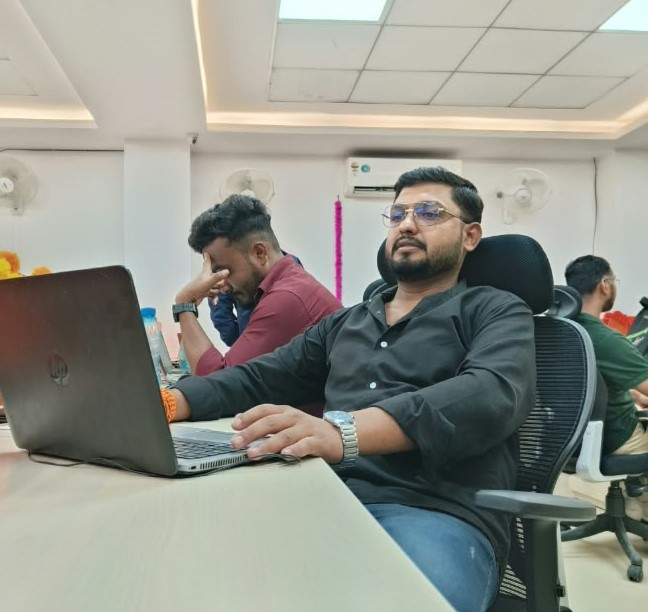

I'm an SEO Executive based in Delhi NCR, originally from Muzaffarpur, Bihar. For the last 3 years I've been doing the unglamorous work behind rankings — audits, fixing pages, writing briefs, building links one by one.
I started in Dec 2022 at Spin On Web doing SEO + airline travel support at the same time. It was chaotic. It also taught me how real people actually search.
↳ Spoiler: no “#1 in 7 days” tricks here. Just basics done properly.
I’m good at on-page, off-page and the technical basics. I’m still learning advanced stuff every week — SEO changes too fast to pretend otherwise.
— if you want honest SEO, we’ll get along.
Not guru-talk. Just the work.
Keyword mapping, title/meta rewrites, internal links, fixing crawl errors in Search Console, checking speed, adding schema where it makes sense. I check rankings, but I care more about clicks and leads.
Mostly white-hat: guest posts, business listings, directories, Quora/forums when relevant, outreach emails. I’ve sent enough outreach to know most get ignored — the few good links matter.
I make content briefs, basic blogs, and creatives in Photoshop / Canva. Nothing fancy — clear headings, real answers, images that don’t slow the page.
For 2+ years I also handled airline travel support — bookings, changes, upset passengers at midnight. It made me better at SEO: I learned how travellers type, panic, and click.
Working remotely for a US client. I own the SEO checklist end-to-end: audit → fix on-page → brief content → build links → report in plain English. Still new here (4 months in), mostly listening, fixing, and learning how US search intent differs.
This role was heavily off-page. Guest posting, citations, profiles, forums — volume work. Some campaigns moved rankings nicely, some flopped. Also supported the travel side, which kept me close to real customer language.
My first real job. I did a bit of everything — white-hat and (honestly) saw how black-hat stuff works too. On-page, local SEO, QuickBooks support pages, airline pages, Photoshop banners when the designer was busy. I did my BCA → MCA studies alongside this, so a lot of late nights.
I won't throw fake “+500% traffic!!” numbers at you. Here's what I did, what was hard, and what happened.
Eco-friendly packaging manufacturer. Problem: good products, but product pages had thin content and near-duplicate titles, and almost no local presence.
→ Pages started ranking for their core product terms and enquiries got more relevant.
Ayurvedic products store. Problem: Shopify-style product pages with little text, no blog structure, technical niggles.
→ Organic became a steadier channel instead of only paid + social.
Less glamorous, very educational. Support-intent SEO (flight changes, refunds, QuickBooks errors) + actual support calls. Taught me to write for stressed people who need an answer fast — which is most of Google, honestly.
No 95% mastery bars — those never mean anything. Here's the honest split:
+ strong basics: white-hat on-page / off-page, local SEO, e-commerce SEO, digital marketing fundamentals.
MCA, Mangalayatan University, Aligarh
(2023–25)
BCA, B.R.A.B.U. Muzaffarpur,
Bihar (2018–21)
Class XII & X, BSEB Patna.
Doing MCA alongside a full-time SEO + night-shift support job wasn't fun. But understanding how websites technically work (thanks, MCA) makes me a better SEO than just knowing “tips”.
How I work: I like checklists, clear deadlines, and managers who tell me the truth. I’m adaptable, I don’t ego-fight developers, and I’ll say “I don’t know, I’ll check” instead of bluffing.
P.S. My Photoshop “skills” started with making cricket posters for friends.
I'm looking for full-time SEO Executive roles (Delhi NCR / remote) and small freelance audits. Send me your website link and one line about the problem — I'll reply honestly if I can help.
Best time: 10am – 7pm IST. Hindi or English, both fine.